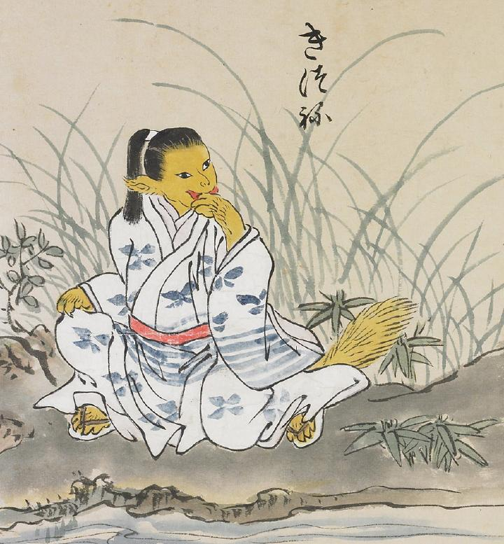

狐；キツネ

黄色い顔をした狐の化物。着物を身につけており、赤い帯を巻いている。総髪にしているため若者のように見える。手をなめている。
著作者：北斎季親／出典：親書誌：U426_nichibunken_0052：化物尽絵巻；バケモノヅクシエマキ／日付：2007／資源識別子：U426_nichibunken_0052_0016_0000
Copyright (c)2010- International Research Center for Japanese Studies, Kyoto, Japan. All rights reserved.